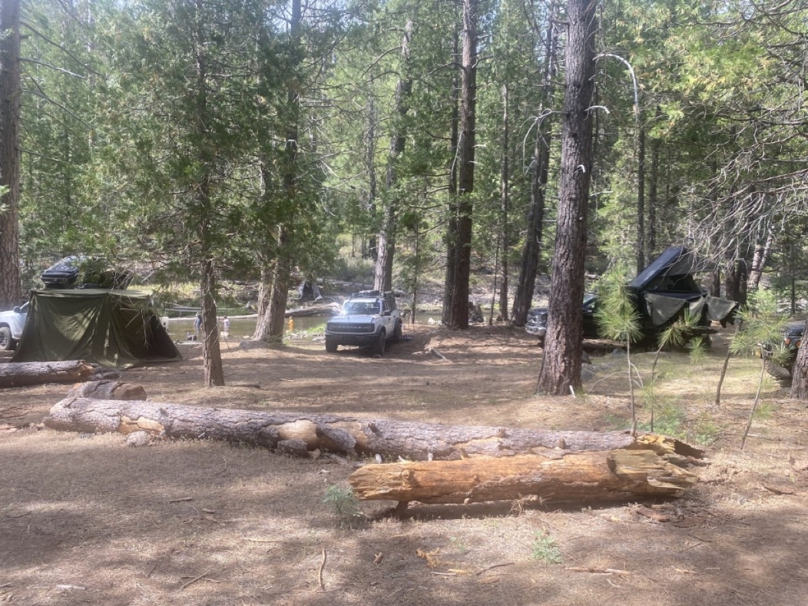

Join us for a relaxing weekend basecamp at Frazer Flat along the scenic South Fork Stanislaus River! Tucked into the lush pine forest of Stanislaus National Forest near Twain Harte and Long Barn, this trip is designed as a chill riverfront getaway. Enjoy riverside relaxing, swimming, fishing (optional—bring your fishing gear & license!), campfires, forest exploration, and good times with the Overland EastBay community.
📍 Information
- Trip Status: Who is interested?
- Trip Limit: 13 rigs / participants (Waitlist active when full)
- Location: Frazer Flat, Stanislaus National Forest, CA


Dates
September 11 – September 13, 2026
Meet-up Location
Date: Friday, September 11, 2026
Time: 7:00 AM
Location: McDonald's at Santa Rita and Highway 580 E. (Standard Deployment Point)
37°42'02.9"N 121°52'10.7"W
37.700795, -121.869642
Camp Location
Location: Frazer Flat Basecamp (South Fork Stanislaus River), Stanislaus National Forest (Mi-Wok Ranger District), CA
Details: Target camp spot along the riverbank in Tuolumne County near Twain Harte / Long Barn. Enjoy pine shade, river swimming, campfires, and forest exploration. Pack-it-in, pack-it-out.
38°09'25.5"N 120°07'03.9"W
38.15707, -120.11774
Fire Restrictions & Permits
Current as of August 17, 2026
Fire Restrictions: Frazer Flat Basecamp is located along the South Fork Stanislaus River in the Mi-Wok Ranger District of the Stanislaus National Forest in California. Under active seasonal Forest Service fire restrictions, open wood and charcoal fires are prohibited outside of developed campgrounds with agency-provided fire rings (meaning wood campfires are NOT allowed at dispersed riverfront camp spots).
Portable Stoves: Portable gas or propane stoves and lanterns with an on/off valve are permitted with a valid permit.
Permit Required: A free California Campfire Permit is mandatory for operating portable gas or propane stoves or lanterns. You must obtain and carry a valid permit during the trip.
Weather
Preparing for the trip, check the weather at our basecamp location:
Current Weather
Expected Trip Weather
Get Ready Before We Go
🛑 SAFETY REQUIREMENTS
Rear Amber Chase Light and HAM Radio communications are REQUIRED to travel with the group.
Why Amber Chase Lights?
Dusty trails are common – amber lights penetrate dust far better than white or red, helping prevent rear-end collisions in low visibility. Learn more about Why Chase Lights?
HAM Radio
Program to 146.460 MHz (simplex). Handhelds work great even without a license for listening.
If you don't have a ham radio yet, check out our guide to get started.
Other Essentials
- Offline navigation (download GPX – limited/no cell service)
- Off-road tires, full-size spare, recovery gear
- Plenty of water, food, camping gear, meds, emergency kit